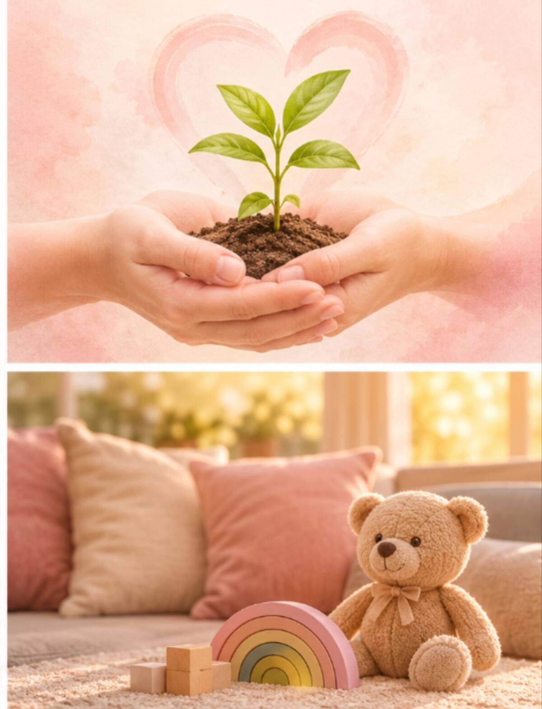
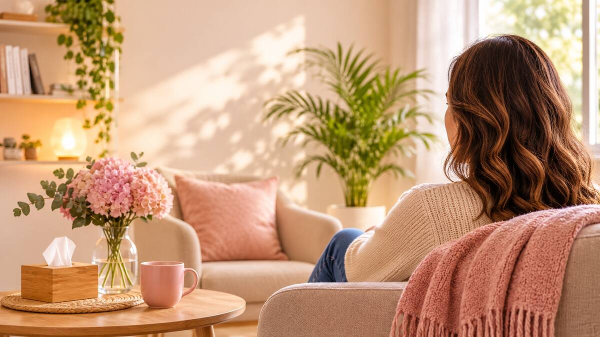
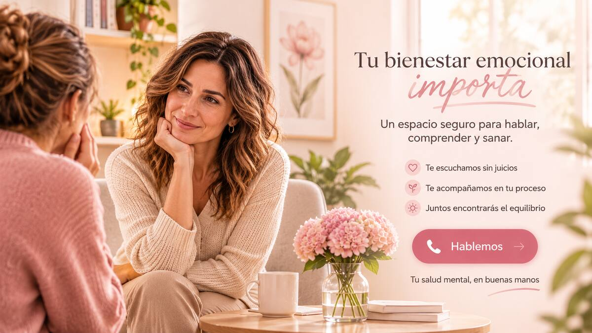

Psicoterapia sistémica breve basada en evidencia. Acompañamiento profesional, cálido y sin juicios para adultos y adolescentes en Villa Alemana y toda la V Región.
Agendar mi primera sesión Conocer cómo trabajoPs. Anaís Núñez — Registro Superintendencia de Salud Nº 881079
Especialización en trauma complejo. Diplomada en Salud Mental en Atención Primaria. En formación como Especialista en Terapia Sistémica Breve.
Creo en la terapia como un encuentro entre personas. Trabajo a tu ritmo, con herramientas concretas y basadas en evidencia científica.
Sesiones de 50 minutos por Google Meet. La misma calidez y profesionalismo de una consulta, desde la seguridad de tu hogar.
Claves para saber que no estás sola/o y que sanar es posible

Trabajo con dedicación en áreas que requieren sensibilidad y experiencia
Sanación de experiencias dolorosas en un entorno de absoluta confidencialidad y respeto por tus tiempos.
Acompañamiento para recuperar tu seguridad, autonomía y reconstruir tu proyecto de vida.
Herramientas prácticas para manejar la intensidad emocional y construir vínculos más seguros.
Intervención focalizada para recuperar la calma, la motivación y la calidad de vida.
Resolver tus dudas es el primer paso para sentirte cómodo/a
No, nunca. Tú tienes el control. La terapia con trauma se trabaja por capas, solo avanzamos cuando tú te sientes segura/o y con tu consentimiento en cada paso.
Sí. La evidencia científica respalda la terapia online. Solo necesitamos una conexión estable y un lugar donde te sientas en privacidad.
Sí. Además de la tarifa particular, ofrezco un valor diferencial accesible para personas que acrediten estar en el tramo del 40% del Registro Social de Hogares (RSH).
Sí, se emite boleta o factura por cada sesión, lo que te permite postular a reembolso según las condiciones de tu plan de salud.
Imágenes que representan la serenidad y el cuidado de nuestro trabajo


Transparencia y accesibilidad para que la salud mental sea una prioridad
Se emite boleta o factura · Pago previo a la sesión
Consultar disponibilidadEstoy aquí para escucharte. Escríbeme sin compromiso.